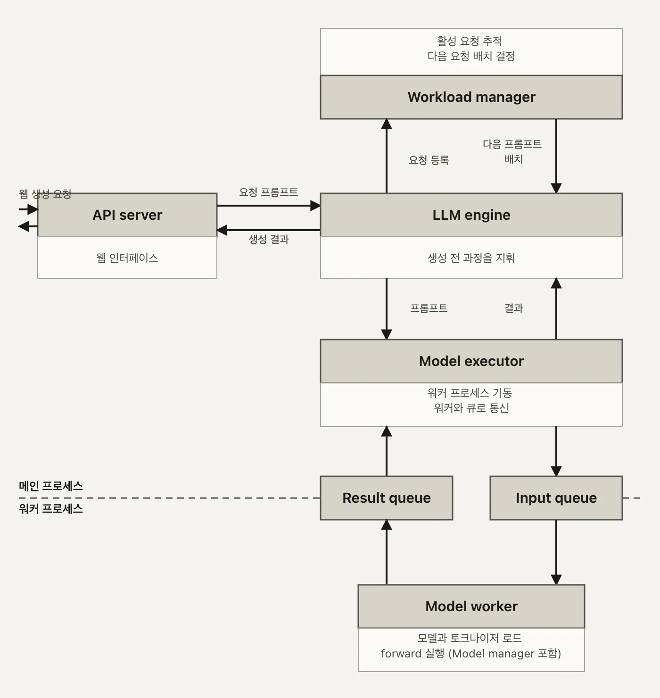
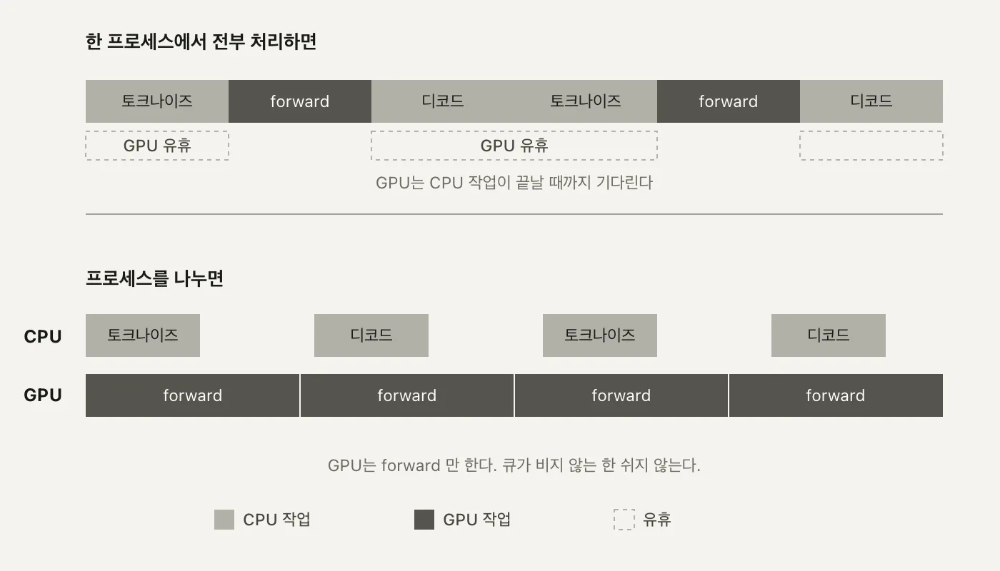
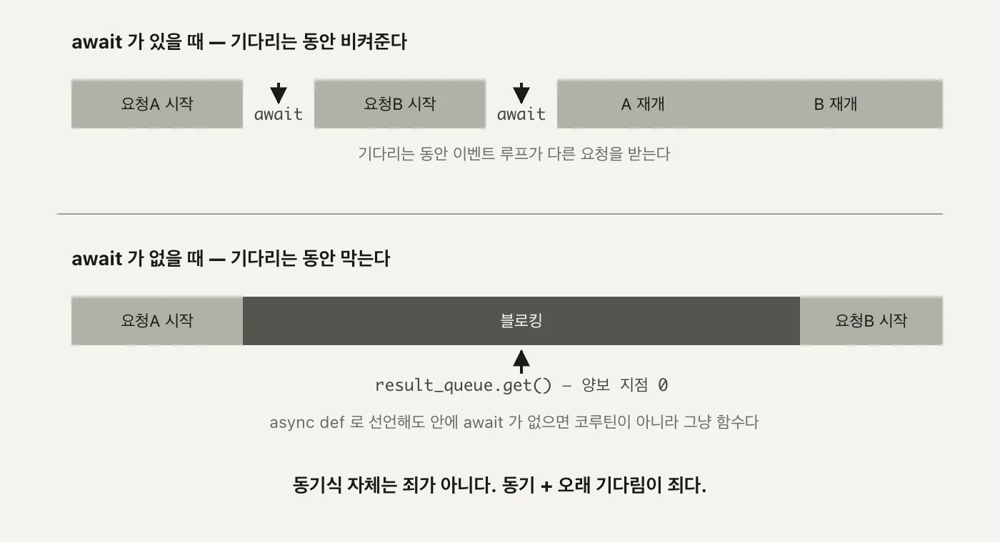

llm
서빙 1편. 여섯 컴포넌트 - 프로세스를 나누는 이유
단일 모델 LLM 서빙 시스템이 왜 여섯 조각으로 갈라지는지, 요청 하나가 프로세스 경계를 넘어 돌아오는 길을 따라갑니다
2026.08.16 · 35 min read
트랜스포머 시리즈에서는 토큰 하나가 벡터가 되고, 문맥을 참조해 다음 토큰의 확률이 되는 계산 자체를 따라갔습니다. 그 계산을 실제 요청-응답 서비스로 돌리는 건 다른 문제입니다. 요청은 한 번에 하나만 오지 않고, GPU 한 장은 비싸고, 모델 코드 한 줄이 죽어도 API 서버 전체가 죽으면 안 됩니다.
facebook/opt-125m 하나를 FastAPI로 서빙하는 실습 코드는 여섯 조각으로 갈라져 있습니다. 요청을 받는 API server, 그 요청을 조율하는 LLM engine, 큐와 배치를 관리하는 Workload manager, GPU 워커 프로세스를 기동하는 Model executor, 실제 추론을 맡는 별도 프로세스 Model worker, 그 안에서 모델과 토크나이저를 불러오는 Model manager.
1부. 서빙은 generate() 호출이 아니다
1.1 단일 모델 서빙의 설계 목표
노트북에서 model.generate("안녕하세요")를 부르면 그 프로세스 하나가 끝날 때까지 아무도 신경 쓸 게 없습니다. 서비스로 바꾸는 순간 조건이 세 개 덧붙습니다.
- 요청은 동시에 여러 개 온다
- 스크립트는 한 번에 한 문장만 처리하면 끝나지만, 서비스는 여러 사용자의 요청이 겹쳐 들어오는 걸 전제로 짜야 합니다. 요청 A를 처리하는 도중에 요청 B가 도착하는 게 예외 상황이 아니라 기본값입니다.
- GPU는 비싸고 대수가 적다
- CPU 코어처럼 손쉽게 늘릴 수 있는 자원이 아닙니다. 한 장으로 최대한 많은 요청을 감당해야 하니, GPU가 노는 시간은 그대로 손해입니다. 요청이 없어도 GPU 메모리에 모델은 계속 올라가 있어야 하고, 그 카드를 다른 모델과 나눠 쓰기도 쉽지 않습니다.
- 모델 프로세스가 죽어도 API는 죽으면 안 된다
- 추론 코드 한 줄이 예외를 던졌다고 서버 전체가 재시작되면, 그 요청과 무관한 다른 사용자의 연결까지 끊깁니다. 모델이 죽는 것과 서버가 죽는 것은 서로 다른 사건이어야 합니다.
왜 중요한가 - 이 세 조건이 이후 모든 구조 선택의 근거입니다. 컴포넌트를 여섯 개로 쪼갠 것도, GPU 연산을 별도 프로세스로 뗀 것도, 프로세스 사이 통신을 큐 두 개로 좁힌 것도 전부 이 세 조건에서 역산됩니다. 반대로 이 세 조건이 없었다면 main.py 한 파일에 model.generate()를 그대로 박아 넣어도 충분했을 겁니다.
스크립트 서비스
한 번에 한 요청 여러 요청이 겹쳐 들어온다
프로세스가 끝나면 그만 프로세스는 계속 떠 있어야 한다
GPU는 그때만 쓰고 놓는다 GPU는 다음 요청을 위해 계속 쥐고 있어야 한다
죽으면 그 실행만 실패 죽으면 그 순간 떠 있던 모든 요청이 영향받는다
이 표의 오른쪽 칸을 코드로 옮긴 결과가 이 글에서 볼 여섯 컴포넌트입니다. "여러 요청이 겹친다"는 Workload manager의 큐로, "GPU를 계속 쥐고 있어야 한다"는 서버 기동 시점의 모델 로드로, "죽어도 전체가 안 죽어야 한다"는 프로세스 분리로 각각 대응됩니다.
1.2 여섯 컴포넌트
실습 코드는 책임을 이렇게 나눠뒀습니다.
| 컴포넌트 | 역할 | 파일 | 줄 수 |
|---|---|---|---|
| API server | HTTP 요청·응답 처리 | main.py |
93 |
| LLM engine | Workload manager와 Model executor 조율 | llm/llm.py |
173 |
| Workload manager | 큐잉과 배치 결정 | llm/workload_manager.py |
89 |
| Model executor | 워커 프로세스 기동과 IPC | llm/model_executor.py |
71 |
| Model worker | 별도 프로세스에서 실제 추론 | llm/model_worker.py |
139 |
| Model manager | 모델·토크나이저 로드 | llm/model_manager.py |
15 |
각 파일이 실제로 하는 일은 이렇습니다.
- API server(
main.py) - HTTP 요청을 받고 Pydantic으로 검증한 뒤, 결과를 응답 모델로 감싸 돌려주는 것 말고는 하지 않습니다. 판단은 전부 아래로 위임합니다. - LLM engine(
llm.py) - 이 시스템에서 제일 큰 파일(173줄)입니다. Workload manager에게 다음 배치를 물어보고, Model executor에게 그 배치를 실행시키고, 스트리밍 요청이면 별도 스레드로 토큰을 클라이언트별 큐에 넣어줍니다. 오케스트레이터입니다. - Workload manager(
workload_manager.py) - 들어온 요청을queue.Queue두 개(배치용, 스트리밍용)에 쌓아두고,batch_size = 4라는 상수만큼씩 꺼내 다음 배치를 결정합니다. - Model executor(
model_executor.py) - 71줄짜리 얇은 파일입니다. 하는 일은 워커 프로세스 하나를 띄우고, 큐 두 개로 그 프로세스와 이야기하는 것뿐입니다. - Model worker(
model_worker.py) - 실제로 토크나이즈,model.generate(), 디코드를 실행하는 별도 프로세스입니다. 139줄 중 대부분이 이 추론 로직입니다. - Model manager(
model_manager.py) - 15줄짜리,AutoModelForCausalLM.from_pretrained와AutoTokenizer.from_pretrained를 부르는 게 전부입니다.

ModelManager().load_model()을 호출해 모델과 토크나이저를 불러오니, 박스 개수와 컴포넌트 개수가 하나 어긋납니다. 가운데를 가로지르는 점선이 프로세스 경계입니다. (자작 도식)경계 왼쪽 넷(API server, LLM engine, Workload manager, Model executor)은 메인 프로세스 안에서 함수 호출로 이어집니다. 경계 오른쪽 둘(Model worker, Model manager)은 mp.Process로 띄운 별도 프로세스 안에 있습니다. 왜 하필 여기에 경계를 그었는지가 다음 절입니다.
여섯을 넷과 둘로 나눈 기준도 눈여겨볼 만합니다. LLM engine과 Workload manager는 둘 다 메인 프로세스 안에 있지만 굳이 파일을 나눴습니다. LLM engine은 스레드를 띄우고 큐를 조율하는 제어 흐름을 담당하고, Workload manager는 그 밑에서 "지금 배치로 뭘 꺼낼지"라는 순수한 상태 관리만 합니다. 오케스트레이션 로직과 큐 상태를 한 파일에 몰아넣지 않고 나눠두면, Workload manager 하나만 떼어서 배치 결정 로직을 테스트하기가 쉬워집니다.
1.3 GPU 프로세스를 떼어내는 이유
경계를 여기 그은 이유는 두 가지입니다.
- 격리 - Model worker 프로세스가 CUDA 에러나 메모리 부족으로 죽어도 API server 프로세스는 살아 있습니다. FastAPI는 계속 연결을 받고, 다음 요청은 새 워커가 뜨면 다시 처리됩니다. 같은 프로세스 안에 있었다면 워커의 크래시가 곧 서버 전체의 크래시입니다.
- 중첩 - 메인 프로세스가 다음 요청을 토크나이즈하거나 이전 응답을 디코드하는 동안, 워커 프로세스는 GPU에서 forward pass를 돌립니다. 하나의 프로세스가 순서대로 처리했다면 이 둘은 절대 겹칠 수 없습니다. CPU 작업과 GPU 작업이 같은 스레드 안에 있으면 GPU가 계산하는 동안 CPU는 다음 할 일을 못 하고 그 계산이 끝나기만 기다립니다.
격리는 스레드로는 흉내 낼 수 없습니다. 스레드는 같은 주소 공간을 공유하니, CUDA 드라이버가 세그폴트를 일으키거나 GPU 컨텍스트가 오염되면 그 메모리를 같이 보고 있는 API server 스레드까지 함께 죽습니다. GIL이 막는 건 "동시에 계산이 도는 것"이지 "한쪽이 죽으면 다른 쪽도 죽는 것"이 아닙니다. 격리를 얻으려면 애초에 주소 공간이 다른 별도 OS 프로세스여야 하고, 그래서 threading.Thread가 아니라 mp.Process입니다.

2부. 요청 하나가 지나가는 길
2.1 서버가 뜨기 전에 모델을 올린다
main.py의 __main__ 블록을 보면 서버를 띄우기 전에 모델부터 올립니다.
if __name__ == "__main__":
import uvicorn
signal.signal(signal.SIGINT, signal_handler)
signal.signal(signal.SIGTERM, signal_handler)
# Initialize LLM before starting the server
get_llm()
uvicorn.run(app, host="0.0.0.0", port=8000)
get_llm()은 multiprocessing.Lock으로 감싼 싱글턴입니다.
def get_llm():
global _llm
with _llm_lock:
if _llm is None:
_llm = LLMEngine()
# Register cleanup
atexit.register(cleanup)
return _llm
(main.py:27-34) 락이 있는 이유는 FastAPI의 각 엔드포인트가 Depends(get_llm)으로 이 함수를 매 요청마다 부르기 때문입니다. 락이 없으면 동시에 들어온 요청 두 개가 동시에 _llm is None을 통과해 LLMEngine()을 두 번 만들 수 있습니다. LLMEngine.__init__은 GPU에 모델을 올리고 워커 프로세스를 띄우는 무거운 작업이라, 두 번 실행되면 GPU 메모리가 두 배로 나갑니다.
그런데 uvicorn.run() 앞에서 get_llm()을 미리 불러버리면, 애초에 락으로 막아야 할 동시 접근 자체가 일어나지 않습니다. 서버가 뜨기 전에 모델을 미리 올려두는 이유는 셋입니다.
- 첫 요청자가 로딩을 기다리지 않는다 - 모델을 올리는 15초가 특정 사용자의 응답 시간에 얹히지 않습니다.
- lazy 로딩은 이벤트 루프를 막는다 - 첫 요청이 왔을 때야 모델을 올린다면, 그 로딩 도중엔 이벤트 루프가 통째로 막혀 다른 요청도 같이 멈춥니다.
- "포트가 열렸다 = 준비됐다"가 성립한다 -
uvicorn.run()이전에 로드가 끝나 있으니, 헬스체크가 포트를 확인하는 순간 모델도 이미 응답 가능한 상태입니다.
LLMEngine.__init__ 안에서는 model_executor.setup_worker("facebook/opt-125m")을 불러 실제 워커 프로세스를 띄웁니다.
def setup_worker(self, model_name: str):
logger.debug(f"Setting up worker with model: {model_name}")
self.worker_process = mp.Process(
target=ModelWorker.run,
args=(model_name, self.task_queue, self.result_queue)
)
logger.debug("Starting worker process")
self.worker_process.start()
logger.debug("Worker process started")
(model_executor.py:23-31) 같은 __init__ 안에서 VLLM(model="facebook/opt-125m")도 따로 하나 더 만듭니다. HuggingFace 워커와 vLLM 엔진, 두 추론 스택이 동시에 GPU에 올라간다는 뜻입니다. 이게 2.4절에서 프로세스가 둘이 아니라 셋으로 보이는 이유입니다. max_tokens은 20으로 고정돼 있습니다.
시작할 때뿐 아니라 끝날 때를 대비한 코드도 있습니다. main.py는 시그널 핸들러와 atexit 훅을 같이 등록해둡니다.
def cleanup():
global _llm
if _llm is not None:
try:
_llm._cleanup()
except:
pass
_llm = None
def signal_handler(signum, frame):
cleanup()
exit(0)
(main.py:18-25, 82-84) SIGINT나 SIGTERM을 받으면 cleanup()이 불려 _llm._cleanup()으로 이어집니다. 정상 종료를 위한 뼈대는 갖춰져 있는 셈인데, 그 뼈대가 실제로 워커 프로세스까지 정리하는지는 3.3절에서 다시 따라가 봅니다.
덧붙이면 _llm_lock은 threading.Lock이 아니라 multiprocessing.Lock입니다. 이 서버는 uvicorn을 단일 프로세스, 단일 이벤트 루프 위에서 돌립니다. get_llm() 안에 await가 없으니 이 함수가 실행되는 동안 다른 코루틴이 끼어들 여지가 애초에 없고, 그렇다면 프로세스 간 락까지는 필요 없어 보입니다. 그런데도 multiprocessing.Lock을 채워둔 건, 나중에 uvicorn을 workers=N으로 여러 프로세스로 띄우는 배포까지 미리 대비해둔 모양새입니다. 지금 당장 필요한 락은 아니지만, 구조를 바꿀 때 다시 손대지 않아도 되게 여지를 남겨둔 선택입니다.
2.2 /basic_generate 의 전체 경로
main.py는 엔드포인트 네 개를 노출합니다. /basic_generate(단건), /generate(배치, 최대 4개), /generate_stream(SSE), /generate_vllm(vLLM 직접 호출). 이 글은 /basic_generate 하나만 끝까지 따라갑니다. /generate의 배칭은 2편이, /generate_stream과 /generate_vllm은 3편이 다룹니다.
요청 하나가 지나가는 길을 파일과 줄 번호로 짚으면 이렇습니다.
main.py:basic_generate:62-65
↓ llm.basic_generate(request.prompt)
llm.py:LLMEngine.basic_generate:76-83
↓ Sequence 하나를 리스트에 담아 execute_batch([sequence])
model_executor.py:execute_batch:33-46
↓ task_queue.put((prompts, False))
──────────────────── 프로세스 경계 ────────────────────
model_worker.py:run:115-140
↓ batch_data = task_queue.get()
model_worker.py:generate:25-66
↓ 토크나이즈 → model.generate() → 디코드
──────────────────── 프로세스 경계 ────────────────────
↑ result_queue.put(('complete', results))
model_executor.py:execute_batch
↑ results = result_queue.get()
llm.py:basic_generate
↑ results[1][0]['generated_text']
main.py:basic_generate
↑ GenerateResponse(generated_text=...)
API server 쪽 코드는 두 줄입니다.
@app.post("/basic_generate", response_model=GenerateResponse)
async def basic_generate(request: GenerateRequest, llm: LLMEngine = Depends(get_llm)):
generated_text = llm.basic_generate(request.prompt)
return GenerateResponse(generated_text=generated_text)
class GenerateRequest(BaseModel):
prompt: str
class GenerateResponse(BaseModel):
generated_text: str
(main.py:36-40) request: GenerateRequest가 함수 시그니처에 오는 순간 FastAPI가 요청 본문을 이 스키마로 검증합니다. prompt 필드가 없거나 문자열이 아니면 핸들러 코드에 닿기도 전에 422 에러로 되돌아갑니다. llm: LLMEngine = Depends(get_llm)은 FastAPI의 의존성 주입인데, 매 요청마다 get_llm()을 부르지만 2.1절에서 본 싱글턴 덕분에 실제로 새로 만들어지는 건 없고 이미 떠 있는 LLMEngine 인스턴스를 그대로 돌려받습니다.
LLM engine 쪽에서 받아 처리하는 부분은 이렇습니다.
def basic_generate(self, prompt: str) -> str:
sequence = Sequence(str(uuid.uuid4()), prompt, None, None)
# Execute the batch
results = self.model_executor.execute_batch([sequence])
return results[1][0]['generated_text']
(llm.py:76-83) 단건 요청 하나가 Sequence 객체 하나로 바뀌고, 그 객체가 크기 1짜리 리스트에 담겨 execute_batch로 넘어갑니다. 이 대목은 3.1절에서 다시 봅니다.
여기서 눈여겨볼 게 하나 있습니다. 이 경로 어디에도 Workload manager가 등장하지 않습니다. basic_generate는 self.workload_manager를 한 번도 부르지 않고 self.model_executor.execute_batch로 곧장 넘어갑니다. 1.2절에서 그린 여섯 컴포넌트는 이 시스템 전체가 갖춘 조각이지만, /basic_generate 하나만 놓고 보면 큐잉과 배치 결정을 맡는 조각은 건너뜁니다. Workload manager가 실제로 일하는 건 /generate의 배치 처리와 스트리밍 쪽이고, 그 이야기는 2편에서 이어집니다.
2.3 mp.Queue 두 개로만 통신한다
ModelExecutor가 프로세스 경계를 넘는 통로는 task_queue와 result_queue, 둘뿐입니다.
def execute_batch(self, prompts: List[Dict[str, Any]]) -> List[Dict[str, Any]]:
if not prompts:
logger.debug("Empty batch received")
return []
logger.debug(f"Sending batch to worker: {prompts}")
# Send batch to worker
self.task_queue.put((prompts, False))
# Get results
logger.debug("Waiting for results from worker")
results = self.result_queue.get()
logger.debug(f"Received results from worker: {results}")
return results
(model_executor.py:33-46) 실제로 프로세스 경계를 넘나드는 줄은 task_queue.put(...)과 result_queue.get(), 이 두 줄뿐입니다. 나머지는 전부 로깅이거나 빈 배치 처리입니다.
두 큐는 ModelExecutor.__init__에서 mp.Queue()로 미리 만들어지고, setup_worker가 mp.Process(target=ModelWorker.run, args=(model_name, self.task_queue, self.result_queue))로 그 큐 객체를 워커 프로세스에 인자로 넘깁니다. 큐를 먼저 만들고 그 참조를 프로세스 생성 인자로 넘기는 순서가 중요합니다. 두 프로세스는 메모리를 공유하지 않으니, mp.Queue 객체 자체가 내부적으로 파일 디스크립터와 락을 pickle로 실어 나를 수 있게 만들어져 있어야 하고, 그래서 프로세스가 뜨기 전에 큐부터 만들어 인자로 건네는 이 순서를 지켜야 합니다.
왜 중요한가 - IPC 통로가 이 두 줄로 좁혀져 있다는 게 이 구조의 단순함입니다. 메인 프로세스는 워커 프로세스의 내부 구현을 몰라도 되고, 워커 프로세스도 API server의 존재를 몰라도 됩니다. 두 프로세스가 아는 건 오직 큐 두 개의 존재뿐입니다.
단순한 만큼 짚어야 할 한계도 있습니다. mp.Queue()는 크기 제한 없이 만들어져 있습니다. task_queue에 넣는 속도가 워커가 처리하는 속도보다 빠르면, 큐에 쌓인 항목이 계속 늘어나며 메모리를 먹습니다. /basic_generate처럼 요청 하나가 처리를 마칠 때까지 다음 execute_batch 호출 자체가 result_queue.get()에 막혀 있는 구조에서는 실제로 이 문제가 잘 드러나지 않지만, 큐 앞단에 요청을 쌓아두고 계속 흘려보내는 구조로 바뀌면 큐 크기에 상한이 없다는 게 그대로 위험 요인이 됩니다.
2.4 프로세스 셋과 GPU 14.5GB
실제로 서버를 띄우고 확인하면 이렇습니다.
curl -X POST http://localhost:8000/basic_generate \
-H "Content-Type: application/json" \
-d '{"prompt": "Hello, I am"}'
{"generated_text": "Hello, I am a student at the University of California, Berkeley..."}
기동 로그에는 model.safetensors 251MB를 내려받는 줄과 vLLM의 init engine 15.36초가 찍힙니다. init engine은 LLMEngine.__init__ 안에서 VLLM(model=...)을 생성하는 동안 vLLM이 내부적으로 GPU 메모리 프로파일링과 KV 캐시 크기 계산을 마치는 시간입니다. 이 15.36초가 2.1절에서 "서버가 뜨기 전에 모델을 올리는" 이유 중 하나인 "첫 요청자가 로딩을 기다리지 않는다"를 실측치로 보여줍니다. 이 시간이 첫 요청의 응답 시간에 얹혔다면 사용자는 15초 넘게 기다렸을 겁니다.
프로세스는 셋입니다.
| PID | 역할 | GPU 메모리 |
|---|---|---|
| 30195 | 부모, uvicorn + FastAPI | - |
| 30237 | 자식, ModelWorker(HuggingFace) | 788MiB |
| 30323 | 자식, vLLM EngineCore | 13,762MiB |
nvidia-smi로 보면 RTX 4070 Ti Super 16,376MiB 중 14,581MiB를 쓰고 있는데, GPU-Util은 0% 입니다. 요청을 하나도 안 보낸 상태라 GPU는 메모리만 쥐고 계산은 안 하고 있다는 뜻입니다. 1.3절에서 그린 "GPU가 비는 구간"이 여기서는 애초에 계산이 시작도 안 한 상태로 나타납니다.
13,762MiB라는 vLLM 프로세스의 메모리가 눈에 띄게 큽니다. opt-125m의 가중치 파일 자체는 251MB, GiB로 환산하면 0.24GiB에 불과합니다. 차이가 나는 이유는 vLLM의 gpu_memory_utilization 기본값이 0.9라서입니다. vLLM은 시작할 때 GPU 전체 메모리의 90%를 미리 확보해 KV 캐시 자리로 잡아둡니다. 이 카드에서는 그 결과로 356,816 토큰치의 KV 캐시 공간이 잡힙니다.
가중치 파일 0.24GiB (model.safetensors, 251MB)
vLLM 프로세스 실사용 13.44GiB (13,762MiB, gpu_memory_utilization=0.9로 선점)
└── 차이 대부분이 KV 캐시 예약분 (356,816 토큰)
모델은 작은데 프로세스가 쥔 메모리는 크다는 게, 가중치 크기만으로 GPU 메모리를 가늠하면 안 되는 이유입니다. 이 실습 코드는 LLMEngine.__init__ 안에서 HuggingFace 워커와 vLLM 엔진을 동시에 올려두기 때문에, 실제로는 한 모델을 두 번 서빙할 준비를 하고 있는 셈이고 GPU 메모리도 그만큼 이중으로 나갑니다.
1.1절에서 "GPU는 비싸고 대수가 적다"고 했던 전제를 여기 다시 대입해보면, 이 이중 로드는 학습용 코드라서 봐줄 수 있는 비효율입니다. 실서비스라면 /basic_generate·/generate가 쓰는 HuggingFace 경로와 /generate_vllm이 쓰는 vLLM 경로 중 하나만 남기고 나머지를 걷어내는 편이, 788MiB와 13,762MiB를 동시에 쥐고 있는 지금보다 같은 카드로 더 많은 요청을 받을 수 있는 방법입니다.
3부. 코드를 읽다 걸린 것
3.1 batch_data 라는 이름 - 단건도 크기 1의 배치
WorkloadManager가 정의하는 Sequence는 이렇게 생겼습니다.
class Sequence:
def __init__(self, seq_id: str, prompt: str, client_stream, loop):
self.id = seq_id
self.prompt = prompt
self.output = []
self.finished = False
self.loop = loop
self.client_stream = client_stream
self.token_count = 0
(workload_manager.py:6-14) client_stream과 loop은 스트리밍 요청에서만 값이 채워지는 필드입니다. /basic_generate는 단건 동기 요청이라 Sequence(str(uuid.uuid4()), prompt, None, None)처럼 두 필드에 그냥 None을 넣습니다. 스트리밍용 필드가 있는 같은 클래스를 단건 요청에도 그대로 씁니다.
ModelExecutor.execute_batch가 큐에 태워 보내는 값은 (prompts, False)라는 튜플이고, 워커 쪽에서 이걸 받는 변수 이름이 batch_data입니다.
batch_data = task_queue.get()
logger.debug(f"Received batch: {batch_data}")
if batch_data is None: # Shutdown signal
logger.debug("Received shutdown signal")
break
batch, is_streaming = batch_data
(model_worker.py:124-133) /basic_generate는 프롬프트 하나짜리 요청인데도 2.2절에서 본 것처럼 execute_batch([sequence])로 리스트에 담아 보냅니다. 워커 입장에서는 요청이 몇 건이었는지 알 필요가 없습니다. generate()가 받는 prompts 인자는 항상 리스트이고, 토크나이저의 padding=True도 원소가 하나든 넷이든 똑같이 동작합니다.
단건을 다건의 특수한 경우(크기 1의 배치)로 취급하면 워커 쪽 코드가 단건용과 배치용 두 벌로 갈라지지 않습니다. batch_data라는 이름이 단건 요청에도 그대로 붙는 게 이 설계의 흔적입니다.
대가도 있습니다. 원소 하나짜리 배치는 배칭이 주는 이득(GPU 한 번의 forward pass로 여러 요청을 처리하는 것) 없이, 토크나이저의 padding=True·truncation=True 같은 배치 전용 인자만 그대로 통과합니다. 패딩할 다른 시퀀스가 없으니 패딩은 사실상 no-op이지만, 코드 경로는 크기 4짜리 배치와 완전히 동일하게 돕니다. 코드가 한 벌로 끝나는 대신, 단건 처리에서 배치 처리 코드를 매번 통과하는 비용을 치르는 셈입니다.
3.2 async def 인데 서버가 멈춘다
basic_generate는 async def로 선언돼 있습니다. 그런데 이 함수가 처리되는 동안 다른 요청은 전혀 못 받습니다.
현재 상태 async def 로 선언된 엔드포인트
↓
목표 상태 그 요청을 처리하는 동안 다른 요청도 같이 서비스된다
↓
실제 결과가 돌아올 때까지 이벤트 루프 전체가 멈춘다
이유는 이 호출 경로 안 어디에도 await가 없기 때문입니다. asyncio의 이벤트 루프는 단일 스레드 위에서 코루틴 여러 개를 번갈아 실행하는 협조적 스케줄링입니다. "협조적"이라는 말은 각 코루틴이 알아서 제어권을 돌려줘야 다음 코루틴 차례가 온다는 뜻입니다. async def는 코루틴을 만든다는 보장일 뿐, 그 안에서 await로 제어권을 이벤트 루프에 돌려주지 않으면 이벤트 루프는 그 함수가 끝날 때까지 다른 어떤 코루틴도 실행하지 못합니다. 협조하기로 약속된 자리에서 협조를 안 하는 셈입니다. basic_generate → llm.basic_generate → execute_batch로 이어지는 경로의 끝은 result_queue.get()이고, 이건 순수한 블로킹 호출이라 양보 지점이 0입니다.

await가 있으면 요청A가 양보하는 순간 요청B가 끼어듭니다. await가 없으면 요청A의 블로킹 구간 전체가 끝나야 요청B가 시작됩니다. 이 코드에서 await를 제대로 쓴 곳은 /generate_stream의 await queue.get() 하나뿐이라, 나머지 엔드포인트는 전부 아래쪽 타임라인을 따릅니다. (자작 도식)그렇다고 동기 호출 자체가 문제인 건 아닙니다. WorkloadManager.get_next_batch도 내부적으로 queue.Queue.get()을 쓰지만, empty()로 먼저 확인하고 나서만 부르기 때문에 즉시 돌아옵니다.
while len(self.active_sequences) < self.batch_size and not self.incoming_queue.empty():
sequence = self.incoming_queue.get()
self.active_sequences.append(sequence)
(workload_manager.py:50-52) 반면 execute_batch의 result_queue.get()은 이런 가드가 없어서 GPU가 forward pass를 끝낼 때까지 몇 초든 그대로 기다립니다. 동기식 호출 자체가 죄가 아니라, 동기식 호출이 오래 걸리는 게 죄입니다. 짧게 끝나는 동기 호출은 이벤트 루프를 막아도 티가 안 나고, 몇 초짜리 동기 호출이 await 없이 코루틴 안에 들어가면 서버 전체가 그만큼 멈춥니다. 고치는 방법(예: asyncio.to_thread로 블로킹 호출을 별도 스레드에 넘기기)은 이 글의 범위 밖입니다. 여기서는 왜 멈추는지 원인만 짚습니다.
3.3 힌트와 다른 반환값, 부르는 곳 없는 종료 신호
execute_batch의 타입 힌트는 2.3절에서 본 것처럼 List[Dict[str, Any]]입니다. 그런데 실제로 큐를 타고 돌아오는 값은 리스트가 아니라 튜플입니다. 워커 쪽 마지막 분기를 보면 이렇습니다.
if is_streaming:
# Handle streaming generation
result_queue.put(('stream', worker.generate_forward_batch(batch)))
else:
# Handle regular generation
result_queue.put(('complete', worker.generate(batch)))
(model_worker.py:135-140) 항상 ('complete', 결과리스트) 꼴의 튜플이 올라갑니다. 그래서 llm.py:83의 반환문이 results[0]이 아니라 results[1][0]['generated_text']로 한 칸 더 들어가 있는 겁니다. results[0]은 'complete'라는 문자열이고, 실제 결과 리스트는 results[1]에 있습니다. 타입 힌트만 보고 execute_batch가 리스트를 돌려준다고 믿으면, 왜 호출부마다 [1]을 붙이는지 코드를 직접 열어보기 전까진 알 수 없습니다.
종료 처리에는 이 코드베이스에 종료 메커니즘이 사실 두 벌 있다는 게 더 걸립니다. 하나는 2.1절에서 본 atexit.register(cleanup)으로 이어지는 경로입니다.
def _cleanup(self):
"""Cleanup function to be called when the program exits."""
# The thread will be automatically terminated since it's a daemon thread
pass
(llm.py:70-73) cleanup() → _llm._cleanup()으로 불리는 이 함수는 주석만 남기고 몸통이 pass입니다. 데몬 스레드는 프로세스가 죽으면 같이 죽는다는 설명은 맞지만, 정작 별도 프로세스인 Model worker는 데몬 스레드가 아니라서 이 설명이 적용되지 않습니다. 워커 프로세스를 정리하는 코드는 여기 없습니다.
다른 하나는 model_worker.py:129의 None 수신 분기입니다.
if batch_data is None: # Shutdown signal
logger.debug("Received shutdown signal")
break
이 저장소 전체를 뒤져도 task_queue.put(None)을 호출하는 곳이 없습니다. task_queue.put은 execute_batch와 execute_forward_batch 두 곳에서만 쓰이고, 둘 다 (prompts, False) 또는 (prompts, True)만 보냅니다. 실제로 워커 프로세스를 정리하는 건 ModelExecutor.__del__입니다.
def __del__(self):
if self.worker_process:
logger.debug("Terminating worker process")
self.worker_process.terminate()
self.worker_process.join()
logger.debug("Worker process terminated")
(model_executor.py:67-72) terminate()는 OS 시그널로 프로세스를 강제 종료하는 하드 킬이고, 이 함수는 가비지 컬렉션이 ModelExecutor 객체를 회수할 때 불립니다. 문제는 파이썬에서 __del__이 언제 불릴지는 보장되지 않는다는 점입니다. CPython은 대개 참조 카운트가 0이 되는 순간 즉시 회수하지만, 인터프리터가 종료되는 시점에는 객체들의 소멸 순서가 뒤섞일 수 있고 순환 참조가 있으면 아예 늦게 불리거나 건너뛸 수도 있습니다. atexit.register(cleanup)이 명시적으로 순서를 정해 부르는 훅인 것과 달리, __del__은 "언젠가 회수될 때" 불리는 훅이라 종료 타이밍을 코드가 통제하지 못합니다.
정리하면 종료 경로가 이렇게 세 갈래로 나뉘어 있습니다. atexit으로 등록된 cleanup()은 아무것도 안 하고, 워커가 스스로 우아하게 빠져나가는 None 분기는 아무도 트리거하지 않고, 실제 정리는 타이밍이 보장되지 않는 __del__의 강제 종료 하나뿐입니다. 종료를 우아하게 하려는 흔적은 코드 두 군데에 남아 있지만, 실제로 실행되는 건 셋 중 가장 거칠고 가장 불확실한 방법입니다.
전체 흐름 정리
서버가 뜨기 전
get_llm() → LLMEngine() → setup_worker() 로 워커 프로세스 기동 ← 2.1
facebook/opt-125m 을 HuggingFace 워커와 vLLM 엔진, 두 스택에 로드
요청 도착 (/basic_generate)
main.py:basic_generate async def 인데 await 없음 ← 3.2
↓
llm.py:basic_generate Sequence 1개를 [sequence] 로 감싼다 ← 3.1
↓
model_executor.py:execute_batch task_queue.put((prompts, False)) ← 2.3
│
─── 프로세스 경계 ───
↓
model_worker.py:run batch_data = task_queue.get() ← 3.1
model_worker.py:generate 토크나이즈 → model.generate() → 디코드
↓
result_queue.put(('complete', results)) ← 3.3
│
─── 프로세스 경계 ───
↓
execute_batch results = result_queue.get() (블로킹) ← 3.2
llm.py:basic_generate results[1][0]['generated_text'] ← 3.3
main.py:basic_generate GenerateResponse 로 응답
한 줄로 줄이면 이렇습니다. API server부터 Model executor까지 넷은 한 프로세스 안 함수 호출로 이어지고, Model worker와 Model manager는 별도 프로세스에서 mp.Queue 두 개로만 그 넷과 이야기합니다.
세 부의 공통점이 하나 있습니다. 어느 것도 /basic_generate가 돌려주는 텍스트 자체를 바꾸지 않았습니다. 컴포넌트를 여섯으로 쪼갠 것도, GIL을 피해 GPU 연산을 별도 프로세스로 뗀 것도, 프로세스 사이 통신을 큐 두 개로 좁힌 것도 전부 정답이 아니라 그 정답에 도달하는 방식을 다루는 이야기였습니다. 3부에서 본 틈들(단건도 배치로 취급하는 것, await 없는 코루틴, 힌트와 다른 반환값, 호출되지 않는 종료 신호) 역시 결과 텍스트에는 영향을 주지 않습니다. 대신 그 결과가 얼마나 빨리, 얼마나 안전하게 돌아오는지에 영향을 줍니다.
기억할 숫자 넷을 정리해 둡니다.
| 숫자 | 뜻 | 왜 중요한가 |
|---|---|---|
| 6개 컴포넌트, 박스 5개 | Model manager가 Model worker 프로세스 안에 있다 | 프로세스 경계가 컴포넌트 경계와 정확히 겹치지 않는다 |
| mp.Queue 2개 | task_queue와 result_queue, 프로세스 경계를 넘는 통로는 이것뿐 | IPC 표면이 좁아 두 프로세스가 서로의 내부를 몰라도 된다 |
| 프로세스 3개, GPU 14.58GB | 부모(uvicorn) + 자식(ModelWorker 788MiB) + 자식(vLLM EngineCore 13,762MiB) | 같은 init 안에서 두 추론 스택을 동시에 올려서다 |
| GPU-Util 0% | 모델은 올라와 있는데 계산은 하나도 안 돈다 | 프로세스를 나눈 것과 GPU를 놀리지 않는 것은 별개 문제다 |
막혔던 곳
이름이 batch_data인데 단건 요청도 여기로 오나? 옵니다. llm.py:78-81이 [sequence]로 감싸 크기 1의 배치로 만듭니다. 단건을 다건의 특수한 경우로 취급해 워커 코드가 한 벌로 끝납니다.
async def인데 왜 한 요청을 처리하는 동안 다른 요청을 못 받나? 안에 await가 없습니다. result_queue.get()은 블로킹 호출이라 양보 지점이 0입니다. 이 코드에서 await를 제대로 쓴 곳은 /generate_stream의 await queue.get() 하나뿐입니다.
그럼 동기 호출은 다 나쁜가? 아닙니다. get_next_batch의 get()은 empty() 가드가 있어 즉시 돌아옵니다. execute_batch의 get()은 가드 없이 GPU 완료를 몇 초 기다립니다. 동기식 자체는 죄가 아닙니다. 동기 + 오래 기다림이 죄입니다.
타입 힌트는 List[Dict]인데 호출부는 왜 results[1]로 꺼내나? 실제 반환값이 ('complete', results) 튜플이라서입니다. 힌트를 믿지 말고 실제 반환값을 찍어봐야 합니다.
워커에 종료 신호를 받는 코드가 있는데 왜 안 죽나? model_worker.py:129에 None을 받으면 break하는 코드가 있는데, task_queue.put(None)을 부르는 곳이 코드 전체에 없습니다. __del__은 terminate()만 합니다.
왜 서버가 뜨기 전에 모델을 미리 로드하나? 셋입니다. 첫 요청자가 로딩을 기다리지 않고, lazy로 두면 로딩하는 동안 이벤트 루프가 막혀 서버 전체가 무응답이 되고, uvicorn.run() 전에 로드하면 "포트가 열렸다 = 진짜 준비됐다"가 성립합니다.
출처
- 스터디 교재, Model Serving System Design 3장
- 실습 코드, https://github.com/orca3/llm-model-inference
- vLLM 문서, https://docs.vllm.ai
- 서빙 구조를 이해하면서 참고한 글 — devlos.tistory.com/128